Overview
NONCANONICAL / ILLUSTRATIVE COST ONLY
- Run ID
- NONCANONICAL_CPU_CANONICAL_100_C2-20260828T213917Z
- Dataset mode
- canonical_100
- Query count
- 100
- Success count
- 100
- Failure count
- 0
- Success rate
- 100.00%
- Benchmark concurrency
- 2
- Duration
- N/A / telemetry unavailable for this run
- Model
- Qwen/Qwen3-0.6B
- Model revision
- N/A / telemetry unavailable for this run
- vLLM version
- 0.8.5
- dtype
- bfloat16
- max model length
- 4096
- max num seqs
- 32
- max batched tokens
- N/A / telemetry unavailable for this run
- GPU memory target
- N/A / telemetry unavailable for this run
- Prefix caching
- disabled
- Cost profile
- reference_cpu_demo:2026-08-28
- Machine hourly cost
- $1.000000
- Cost profile type
- synthetic/reference
Assignment Metrics
- Total run cost
- $0.355583
- Mean cost/query
- $0.003556
- Median cost/query
- $0.002870
- p95 cost/query
- $0.006664
- Queries per dollar
- 281.228
- Tokens per dollar
- 107,083.16
- Request cost sum
- $0.355583
Percentage of total cost by agent
| Agent | Share |
|---|---|
| AdvisorAgent | 45.00% |
| MetricsAgent | 13.66% |
| PriceAgent | 14.38% |
| RiskAgent | 6.96% |
| overhead_unallocated | 20.00% |
Request cost sum should match total run cost within floating-point tolerance. Failed attempts retain allocated infrastructure cost.
Cost
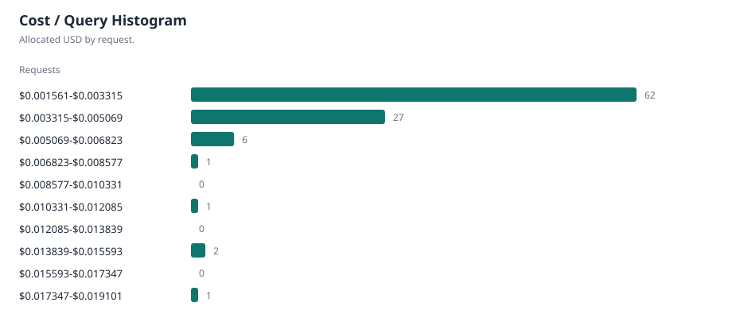
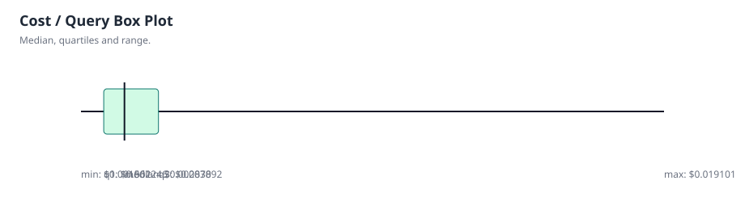
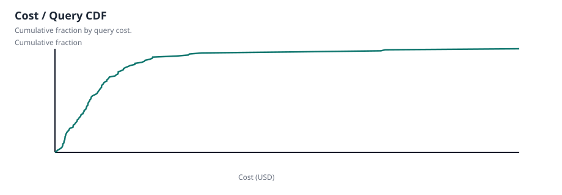
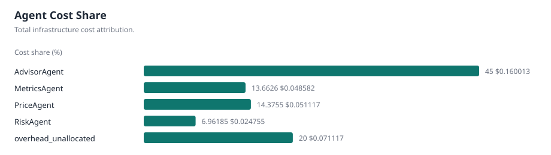
Performance
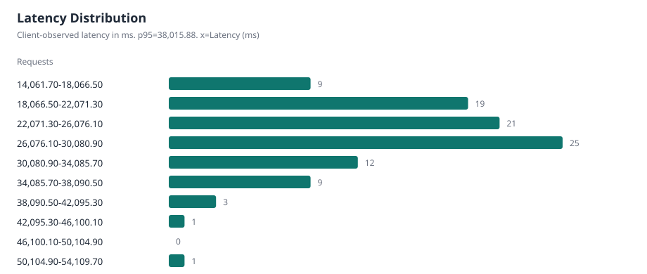
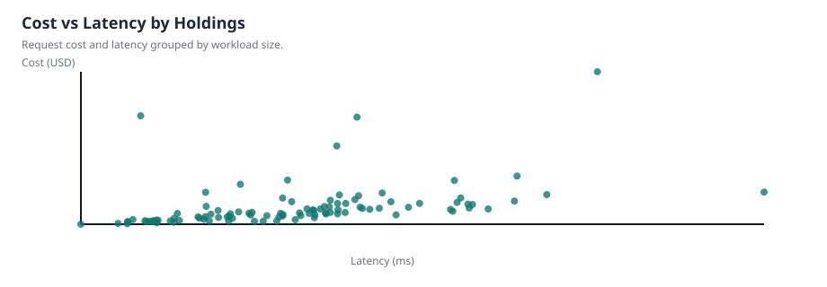
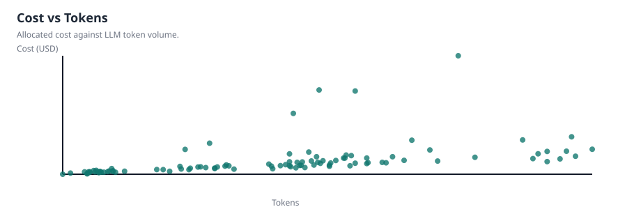
Agents & Tools
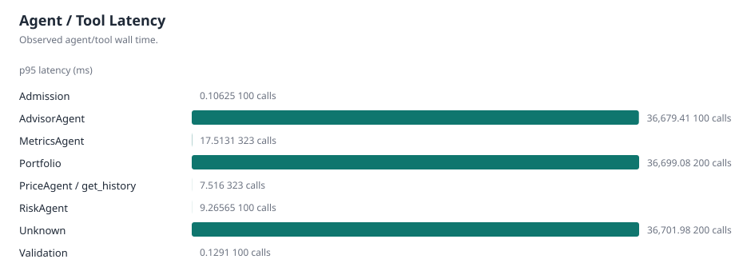
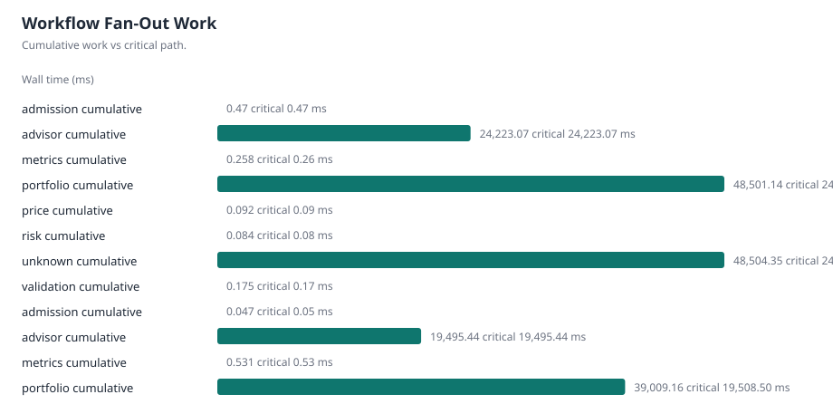
Inference & Serving
- Inference request count
- 100
- Total prompt tokens
- 25988
- Total completion tokens
- 12089
- Total tokens
- 38077
- Inference elapsed p50
- 24,996.30 ms
- Inference elapsed p95
- 36,678.77 ms
Aggregate vLLM telemetry
| Metric | Latest | Mean | Max | Source |
|---|---|---|---|---|
| Requests running | 2 requests | 1.44186 requests | 2 requests | gauge |
| Requests waiting | 0 requests | 0 requests | 0 requests | gauge |
| Prompt token throughput | 12.091 tokens/s | 20.0354 tokens/s | 32.8826 tokens/s | rate |
| Generation token throughput | 9.801 tokens/s | 9.1432 tokens/s | 13.3979 tokens/s | rate |
| Aggregate E2E p50 | 22,500.00 ms | 26,038.15 ms | 37,500.00 ms | run-level |
| Aggregate E2E p95 | 29,250.00 ms | 33,475.05 ms | 59,000.00 ms | run-level |
| Aggregate TTFT p50 | 3,750.00 ms | 6,037.45 ms | 15,000.00 ms | run-level |
| Aggregate TTFT p95 | 4,875.00 ms | 8,450.97 ms | 19,500.00 ms | run-level |
| Aggregate TPOT p50 | 135.239 ms | 126.004 ms | 136.783 ms | run-level |
| Aggregate TPOT p95 | 304.412 ms | 205.04 ms | 365 ms | run-level |
| Aggregate queue p95 | 285 ms | 285 ms | 285 ms | run-level |
| Aggregate prefill p95 | 4,875.00 ms | 8,906.38 ms | 14,750.00 ms | run-level |
| Aggregate decode p95 | 19,750.00 ms | 27,809.74 ms | 49,000.00 ms | run-level |
| KV-cache utilization | 3.08% | 4.74% | 94.02% | gauge |
| Preemptions | 0 count | 0 count | 0 count | increase |
| Prefix-cache hits | N/A / telemetry unavailable for this run | N/A / telemetry unavailable for this run | N/A / telemetry unavailable for this run | rate |
| Prefix-cache queries | N/A / telemetry unavailable for this run | N/A / telemetry unavailable for this run | N/A / telemetry unavailable for this run | rate |
GPU telemetry
| Metric | Latest | Mean | Max |
|---|---|---|---|
| GPU utilization | N/A / telemetry unavailable for this run | N/A / telemetry unavailable for this run | N/A / telemetry unavailable for this run |
| GPU memory used | N/A / telemetry unavailable for this run | N/A / telemetry unavailable for this run | N/A / telemetry unavailable for this run |
| GPU power | N/A / telemetry unavailable for this run | N/A / telemetry unavailable for this run | N/A / telemetry unavailable for this run |
| GPU temperature | N/A / telemetry unavailable for this run | N/A / telemetry unavailable for this run | N/A / telemetry unavailable for this run |
| GPU energy | N/A / telemetry unavailable for this run | N/A / telemetry unavailable for this run | N/A / telemetry unavailable for this run |
Exact per-request inference values come from inference spans. vLLM scheduler and histogram values are aggregate run-level Prometheus telemetry and are not assigned to individual requests.
Workload
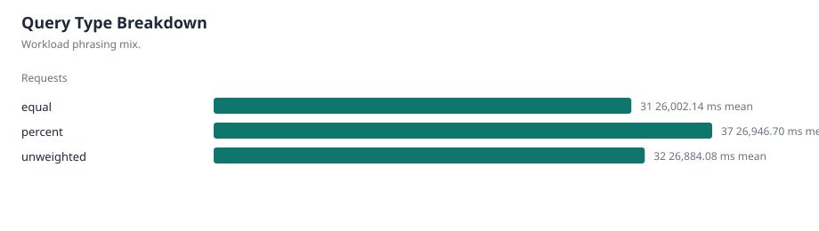
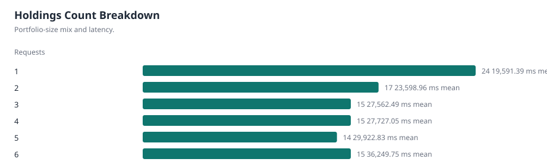
Request Drilldown
| Query ID | Request ID | Holdings | Type | Latency | Prompt tokens | Completion tokens | Cost | Success |
|---|---|---|---|---|---|---|---|---|
| 21 | NONCANONICAL_CPU_CANONICAL_100_C2-20260828T213917Z-1-dc96d6a30fc84035b8d2f1b1ada167c7 | 1 | percent | 25,543.35 ms | 144 tokens | 107 tokens | $0.001943 | True |
| 17 | NONCANONICAL_CPU_CANONICAL_100_C2-20260828T213917Z-2-00a2b939f1544f598d0b88ca9c50b7b0 | 1 | percent | 21,589.11 ms | 142 tokens | 101 tokens | $0.001944 | True |
| 98 | NONCANONICAL_CPU_CANONICAL_100_C2-20260828T213917Z-3-bf0c2e8b255d4e83a01a9ac2af3ff610 | 1 | percent | 19,296.97 ms | 144 tokens | 93 tokens | $0.001934 | True |
| 123 | NONCANONICAL_CPU_CANONICAL_100_C2-20260828T213917Z-4-bd2290f9f29f429380dd94151190d52f | 1 | percent | 20,932.55 ms | 144 tokens | 110 tokens | $0.002399 | True |
| 639 | NONCANONICAL_CPU_CANONICAL_100_C2-20260828T213917Z-5-2590942ff76f4e91a0810c58e9b47bec | 1 | percent | 18,298.02 ms | 144 tokens | 101 tokens | $0.001963 | True |
| 625 | NONCANONICAL_CPU_CANONICAL_100_C2-20260828T213917Z-6-e7e59c3892ec425b973b9fbcede4f41a | 1 | equal | 16,783.21 ms | 146 tokens | 89 tokens | $0.001621 | True |
| 100 | NONCANONICAL_CPU_CANONICAL_100_C2-20260828T213917Z-7-20530f94347749758431fbf68acb6b85 | 1 | equal | 16,236.70 ms | 142 tokens | 93 tokens | $0.001657 | True |
| 543 | NONCANONICAL_CPU_CANONICAL_100_C2-20260828T213917Z-8-fe36791ecd354f1c84ab47948cfad14a | 1 | equal | 17,817.76 ms | 144 tokens | 111 tokens | $0.001965 | True |
| 82 | NONCANONICAL_CPU_CANONICAL_100_C2-20260828T213917Z-9-fec1c4d8e65d40408f879be9e86bb92a | 1 | equal | 18,072.14 ms | 142 tokens | 94 tokens | $0.001900 | True |
| 125 | NONCANONICAL_CPU_CANONICAL_100_C2-20260828T213917Z-10-196799c7d8cd430487fd8f2b4cea4a76 | 1 | unweighted | 19,517.42 ms | 141 tokens | 103 tokens | $0.001789 | True |
| 621 | NONCANONICAL_CPU_CANONICAL_100_C2-20260828T213917Z-11-3493773a130b438796c908256e4ac4a6 | 1 | unweighted | 18,586.57 ms | 146 tokens | 118 tokens | $0.002006 | True |
| 790 | NONCANONICAL_CPU_CANONICAL_100_C2-20260828T213917Z-12-7ad726be2ab647a0a3923df752fc01f7 | 1 | unweighted | 16,805.80 ms | 144 tokens | 104 tokens | $0.001857 | True |
| 412 | NONCANONICAL_CPU_CANONICAL_100_C2-20260828T213917Z-13-9de55d8b38194ff2b2ecb6a30e637a76 | 1 | unweighted | 17,106.07 ms | 142 tokens | 98 tokens | $0.002098 | True |
| 30 | NONCANONICAL_CPU_CANONICAL_100_C2-20260828T213917Z-14-f26e81a6e6e34bf3a7b0046dfea11881 | 2 | percent | 22,642.46 ms | 194 tokens | 140 tokens | $0.002403 | True |
| 7 | NONCANONICAL_CPU_CANONICAL_100_C2-20260828T213917Z-15-66c0f293a0e14568bd62da155f85c589 | 2 | percent | 22,758.68 ms | 194 tokens | 140 tokens | $0.002474 | True |
| 71 | NONCANONICAL_CPU_CANONICAL_100_C2-20260828T213917Z-16-3ca38fd563724175a21e766a444dbf47 | 2 | percent | 24,099.81 ms | 192 tokens | 151 tokens | $0.002937 | True |
| 16 | NONCANONICAL_CPU_CANONICAL_100_C2-20260828T213917Z-17-c53656e8db074ec4b42d0e7ce661d199 | 2 | percent | 23,409.38 ms | 192 tokens | 138 tokens | $0.006149 | True |
| 12 | NONCANONICAL_CPU_CANONICAL_100_C2-20260828T213917Z-18-904a324dbefd452ea5bdc577e389b258 | 2 | percent | 21,363.15 ms | 194 tokens | 121 tokens | $0.002449 | True |
| 24 | NONCANONICAL_CPU_CANONICAL_100_C2-20260828T213917Z-19-56f976f3dd534839ac820ca7bbbd8ae7 | 2 | equal | 19,834.35 ms | 189 tokens | 110 tokens | $0.001992 | True |
| 6 | NONCANONICAL_CPU_CANONICAL_100_C2-20260828T213917Z-20-953728708f4c459da22ea34fba84e01d | 2 | equal | 24,964.44 ms | 188 tokens | 139 tokens | $0.002537 | True |
| 32 | NONCANONICAL_CPU_CANONICAL_100_C2-20260828T213917Z-21-26f4fc35289f4a79b07d202e82382a11 | 2 | equal | 21,015.08 ms | 190 tokens | 99 tokens | $0.002253 | True |
| 89 | NONCANONICAL_CPU_CANONICAL_100_C2-20260828T213917Z-22-2c95a6c81e83402095d0dd5d96843b9c | 2 | equal | 21,679.95 ms | 188 tokens | 119 tokens | $0.002720 | True |
| 722 | NONCANONICAL_CPU_CANONICAL_100_C2-20260828T213917Z-23-d0116ed094c34ce984d330d0a24eb92c | 2 | equal | 24,010.67 ms | 186 tokens | 135 tokens | $0.002619 | True |
| 15 | NONCANONICAL_CPU_CANONICAL_100_C2-20260828T213917Z-24-5e1f1fc7a3154a4cabbb25913bf2a1dc | 2 | unweighted | 22,945.04 ms | 192 tokens | 122 tokens | $0.002240 | True |
| 247 | NONCANONICAL_CPU_CANONICAL_100_C2-20260828T213917Z-25-81c4497ff2fa4dc580c1e15e0be42b3e | 2 | unweighted | 22,128.24 ms | 188 tokens | 120 tokens | $0.002334 | True |
| 175 | NONCANONICAL_CPU_CANONICAL_100_C2-20260828T213917Z-26-a4eb3af7661f4ac28686cadc796ce8a9 | 2 | unweighted | 19,533.77 ms | 191 tokens | 103 tokens | $0.002247 | True |
| 14 | NONCANONICAL_CPU_CANONICAL_100_C2-20260828T213917Z-27-e851e67ac0f64f08b6a03b400e6ab003 | 2 | unweighted | 21,369.90 ms | 188 tokens | 123 tokens | $0.005237 | True |
| 974 | NONCANONICAL_CPU_CANONICAL_100_C2-20260828T213917Z-28-15d5b772dc944355b94726c937d76ec9 | 2 | unweighted | 27,779.29 ms | 189 tokens | 134 tokens | $0.002660 | True |
| 8 | NONCANONICAL_CPU_CANONICAL_100_C2-20260828T213917Z-29-d4188f17e2e344c782543840fc10e634 | 3 | percent | 27,746.69 ms | 243 tokens | 106 tokens | $0.002310 | True |
| 23 | NONCANONICAL_CPU_CANONICAL_100_C2-20260828T213917Z-30-8edfb8eb33e64ff7b1469451adbb4fb9 | 3 | percent | 35,861.69 ms | 238 tokens | 138 tokens | $0.003060 | True |
| 52 | NONCANONICAL_CPU_CANONICAL_100_C2-20260828T213917Z-31-e698a4211e4745cbbfe995d2d20da857 | 3 | percent | 19,722.79 ms | 241 tokens | 104 tokens | $0.002800 | True |
| 3 | NONCANONICAL_CPU_CANONICAL_100_C2-20260828T213917Z-32-19ab36624ebb455b9a0ac722e40f84bd | 3 | percent | 29,060.72 ms | 244 tokens | 151 tokens | $0.010570 | True |
| 51 | NONCANONICAL_CPU_CANONICAL_100_C2-20260828T213917Z-33-87f210403e0a42efb444b67930ca80d1 | 3 | percent | 31,555.57 ms | 240 tokens | 152 tokens | $0.003396 | True |
| 40 | NONCANONICAL_CPU_CANONICAL_100_C2-20260828T213917Z-34-e9f08f7734ba4ba7ba890ec41cd53e44 | 3 | equal | 25,671.72 ms | 282 tokens | 97 tokens | $0.002373 | True |
| 57 | NONCANONICAL_CPU_CANONICAL_100_C2-20260828T213917Z-35-ae980fad1149449288b2ac519ea1a020 | 3 | equal | 25,908.62 ms | 281 tokens | 112 tokens | $0.002662 | True |
| 369 | NONCANONICAL_CPU_CANONICAL_100_C2-20260828T213917Z-36-bd55b44863f448dc9b353c7c45fb544d | 3 | equal | 23,914.61 ms | 280 tokens | 105 tokens | $0.002835 | True |
| 103 | NONCANONICAL_CPU_CANONICAL_100_C2-20260828T213917Z-37-19258fb0f11c4a69aa0df2a70616c219 | 3 | equal | 29,111.45 ms | 280 tokens | 155 tokens | $0.003944 | True |
| 425 | NONCANONICAL_CPU_CANONICAL_100_C2-20260828T213917Z-38-edc0c174ca644ee99d6d1feb46efd76f | 3 | equal | 22,825.04 ms | 277 tokens | 101 tokens | $0.002753 | True |
| 28 | NONCANONICAL_CPU_CANONICAL_100_C2-20260828T213917Z-39-c934f949f86a4740bfa3af2f37bfaab0 | 3 | unweighted | 26,951.10 ms | 278 tokens | 126 tokens | $0.002547 | True |
| 75 | NONCANONICAL_CPU_CANONICAL_100_C2-20260828T213917Z-40-25bd4f506a984acbb43df8cf3c5e962e | 3 | unweighted | 28,683.30 ms | 280 tokens | 131 tokens | $0.002923 | True |
| 251 | NONCANONICAL_CPU_CANONICAL_100_C2-20260828T213917Z-41-211a4f57afef4777806d0648f1f889fb | 3 | unweighted | 29,130.91 ms | 282 tokens | 142 tokens | $0.003220 | True |
| 67 | NONCANONICAL_CPU_CANONICAL_100_C2-20260828T213917Z-42-2dfb0df288094510a0898f84171ec7ab | 3 | unweighted | 29,583.86 ms | 281 tokens | 153 tokens | $0.003952 | True |
| 161 | NONCANONICAL_CPU_CANONICAL_100_C2-20260828T213917Z-43-435f730c85f14bb39551e2a072bc55cb | 3 | unweighted | 27,709.25 ms | 279 tokens | 137 tokens | $0.003170 | True |
| 2 | NONCANONICAL_CPU_CANONICAL_100_C2-20260828T213917Z-44-8dd8ea5eb5864e608e013840cd2ba37b | 4 | percent | 29,550.09 ms | 283 tokens | 140 tokens | $0.002913 | True |
| 43 | NONCANONICAL_CPU_CANONICAL_100_C2-20260828T213917Z-45-8fb56da06e984d06ae2300fb54acd5dd | 4 | percent | 28,399.80 ms | 284 tokens | 117 tokens | $0.002877 | True |
| 5 | NONCANONICAL_CPU_CANONICAL_100_C2-20260828T213917Z-46-eb23ec70913643718a8963bb7950315e | 4 | percent | 28,628.31 ms | 285 tokens | 133 tokens | $0.003557 | True |
| 1 | NONCANONICAL_CPU_CANONICAL_100_C2-20260828T213917Z-47-645a8d653d6a4788a3b3cb2f31b0bffc | 4 | percent | 26,417.56 ms | 285 tokens | 128 tokens | $0.004147 | True |
| 13 | NONCANONICAL_CPU_CANONICAL_100_C2-20260828T213917Z-48-f2e97cbe2aaf4d609d1a3edb23e3897a | 4 | percent | 27,318.00 ms | 283 tokens | 131 tokens | $0.003324 | True |
| 92 | NONCANONICAL_CPU_CANONICAL_100_C2-20260828T213917Z-49-7773b45e82854f158abe4e1ac7fed5cd | 4 | equal | 25,885.68 ms | 285 tokens | 112 tokens | $0.002512 | True |
| 78 | NONCANONICAL_CPU_CANONICAL_100_C2-20260828T213917Z-50-e36f46e0befe42e19d8d9a30f797f51f | 4 | equal | 26,876.75 ms | 285 tokens | 115 tokens | $0.002863 | True |
| 37 | NONCANONICAL_CPU_CANONICAL_100_C2-20260828T213917Z-51-b14d4d1eba244972a4eb963c569344d9 | 4 | equal | 28,098.97 ms | 280 tokens | 118 tokens | $0.003317 | True |
| 31 | NONCANONICAL_CPU_CANONICAL_100_C2-20260828T213917Z-52-ca2eee31ede340de945cb396c2430739 | 4 | equal | 25,887.38 ms | 282 tokens | 110 tokens | $0.004578 | True |
| 195 | NONCANONICAL_CPU_CANONICAL_100_C2-20260828T213917Z-53-13c37eaed65d4cd0b85892eb51f64bd1 | 4 | equal | 23,310.81 ms | 285 tokens | 104 tokens | $0.002977 | True |
| 277 | NONCANONICAL_CPU_CANONICAL_100_C2-20260828T213917Z-54-c83c1286caba4f50805085e8f70132f7 | 4 | unweighted | 28,431.55 ms | 284 tokens | 139 tokens | $0.002737 | True |
| 312 | NONCANONICAL_CPU_CANONICAL_100_C2-20260828T213917Z-55-c4dea2398e4c4dfca6a322b20da94ff4 | 4 | unweighted | 25,769.68 ms | 276 tokens | 116 tokens | $0.002812 | True |
| 80 | NONCANONICAL_CPU_CANONICAL_100_C2-20260828T213917Z-56-40740dce305d472d92fd9e2527e7e92a | 4 | unweighted | 30,429.49 ms | 279 tokens | 130 tokens | $0.003519 | True |
| 63 | NONCANONICAL_CPU_CANONICAL_100_C2-20260828T213917Z-57-d6f0fe44ae3948ffbadeede6a6a52c3e | 4 | unweighted | 30,338.84 ms | 281 tokens | 126 tokens | $0.004838 | True |
| 133 | NONCANONICAL_CPU_CANONICAL_100_C2-20260828T213917Z-58-f7c713b1754a4a788cfc57b425a79312 | 4 | unweighted | 30,562.87 ms | 282 tokens | 120 tokens | $0.003374 | True |
| 39 | NONCANONICAL_CPU_CANONICAL_100_C2-20260828T213917Z-59-7fbc9a5193b14785a521a75a235f760a | 5 | percent | 35,724.47 ms | 329 tokens | 138 tokens | $0.003250 | True |
| 84 | NONCANONICAL_CPU_CANONICAL_100_C2-20260828T213917Z-60-a585a646b0914db18e0111a35ef165ae | 5 | percent | 30,999.24 ms | 327 tokens | 126 tokens | $0.003274 | True |
| 90 | NONCANONICAL_CPU_CANONICAL_100_C2-20260828T213917Z-61-d82e4efdeddb46f0be25df3ed87514ff | 5 | percent | 28,685.33 ms | 328 tokens | 112 tokens | $0.004318 | True |
| 33 | NONCANONICAL_CPU_CANONICAL_100_C2-20260828T213917Z-62-715dfbae77324edabd82923162cec487 | 5 | percent | 35,955.18 ms | 325 tokens | 162 tokens | $0.006598 | True |
| 4 | NONCANONICAL_CPU_CANONICAL_100_C2-20260828T213917Z-63-3c4e6c8098cb46fb99f6f24b804c248c | 5 | percent | 32,235.29 ms | 330 tokens | 142 tokens | $0.004150 | True |
| 77 | NONCANONICAL_CPU_CANONICAL_100_C2-20260828T213917Z-64-fd942881742a471e90ed56eed81c42c9 | 5 | equal | 37,939.04 ms | 323 tokens | 141 tokens | $0.003320 | True |
| 314 | NONCANONICAL_CPU_CANONICAL_100_C2-20260828T213917Z-65-417507368a4b420aab61ecd0941c739c | 5 | equal | 22,101.37 ms | 324 tokens | 128 tokens | $0.003137 | True |
| 216 | NONCANONICAL_CPU_CANONICAL_100_C2-20260828T213917Z-66-bc2f90b61239457da02133f428a11c83 | 5 | equal | 30,121.54 ms | 323 tokens | 113 tokens | $0.004402 | True |
| 83 | NONCANONICAL_CPU_CANONICAL_100_C2-20260828T213917Z-67-fa2281081a964d8a89cc906d68db0535 | 5 | equal | 30,246.62 ms | 326 tokens | 117 tokens | $0.013877 | True |
| 114 | NONCANONICAL_CPU_CANONICAL_100_C2-20260828T213917Z-68-6091bc934ab041f5bc77d0cf871596e1 | 5 | unweighted | 27,448.00 ms | 324 tokens | 115 tokens | $0.002806 | True |
| 162 | NONCANONICAL_CPU_CANONICAL_100_C2-20260828T213917Z-69-8c9ab350c29d46efa4316bcf68c74b05 | 5 | unweighted | 27,648.59 ms | 322 tokens | 121 tokens | $0.003190 | True |
| 603 | NONCANONICAL_CPU_CANONICAL_100_C2-20260828T213917Z-70-4c34e30cbe6e48399cb1677d64442187 | 5 | unweighted | 33,918.11 ms | 326 tokens | 126 tokens | $0.003951 | True |
| 95 | NONCANONICAL_CPU_CANONICAL_100_C2-20260828T213917Z-71-ac09e829a2ca4c5ab9753db915033d2a | 5 | unweighted | 17,566.74 ms | 316 tokens | 99 tokens | $0.014033 | True |
| 311 | NONCANONICAL_CPU_CANONICAL_100_C2-20260828T213917Z-72-4eb806b7bf9d4bbf888bd2d49096463f | 5 | unweighted | 28,330.14 ms | 320 tokens | 108 tokens | $0.003595 | True |
| 120 | NONCANONICAL_CPU_CANONICAL_100_C2-20260828T213917Z-73-4ad1ee4c7ffb4502832ef76b8d45c02f | 6 | percent | 33,261.31 ms | 373 tokens | 134 tokens | $0.003516 | True |
| 413 | NONCANONICAL_CPU_CANONICAL_100_C2-20260828T213917Z-74-41de152bc3a44288bb0739e778b6408b | 6 | percent | 36,114.40 ms | 375 tokens | 161 tokens | $0.004064 | True |
| 76 | NONCANONICAL_CPU_CANONICAL_100_C2-20260828T213917Z-75-902c58e2ddb34180a3b932273932d0b2 | 6 | percent | 31,727.10 ms | 373 tokens | 128 tokens | $0.005150 | True |
| 131 | NONCANONICAL_CPU_CANONICAL_100_C2-20260828T213917Z-76-7494c8e077024cddb0ea9707a0bc0879 | 6 | percent | 44,341.12 ms | 378 tokens | 145 tokens | $0.019101 | True |
| 116 | NONCANONICAL_CPU_CANONICAL_100_C2-20260828T213917Z-77-54fcc03a926b4c6fbc1f8e4d49157902 | 6 | percent | 21,406.68 ms | 377 tokens | 104 tokens | $0.003614 | True |
| 66 | NONCANONICAL_CPU_CANONICAL_100_C2-20260828T213917Z-78-e2a62f1a3b624f41924026bafef4f35e | 6 | equal | 37,015.24 ms | 463 tokens | 139 tokens | $0.003831 | True |
| 654 | NONCANONICAL_CPU_CANONICAL_100_C2-20260828T213917Z-79-19f649f5cd8b4bba969dd278e1b93755 | 6 | equal | 39,475.82 ms | 467 tokens | 147 tokens | $0.004221 | True |
| 134 | NONCANONICAL_CPU_CANONICAL_100_C2-20260828T213917Z-80-3355daf56daf4260a5e89c330b82591f | 6 | equal | 54,109.70 ms | 469 tokens | 158 tokens | $0.005252 | True |
| 49 | NONCANONICAL_CPU_CANONICAL_100_C2-20260828T213917Z-81-b52703a0f22f4d46a01f4f7d0638adc2 | 6 | equal | 26,178.07 ms | 465 tokens | 108 tokens | $0.006641 | True |
| 308 | NONCANONICAL_CPU_CANONICAL_100_C2-20260828T213917Z-82-7924132165bf472f8421703685319395 | 6 | equal | 36,326.36 ms | 467 tokens | 118 tokens | $0.004581 | True |
| 10 | NONCANONICAL_CPU_CANONICAL_100_C2-20260828T213917Z-83-d2da5423d71946dfb59f25d696d91f0b | 6 | unweighted | 36,824.79 ms | 464 tokens | 128 tokens | $0.003429 | True |
| 42 | NONCANONICAL_CPU_CANONICAL_100_C2-20260828T213917Z-84-189f1433d668436a893175c4684214e6 | 6 | unweighted | 36,745.65 ms | 469 tokens | 112 tokens | $0.003874 | True |
| 188 | NONCANONICAL_CPU_CANONICAL_100_C2-20260828T213917Z-85-adba753970bf4301aa3a25c657e33b9c | 6 | unweighted | 41,372.44 ms | 460 tokens | 147 tokens | $0.004970 | True |
| 154 | NONCANONICAL_CPU_CANONICAL_100_C2-20260828T213917Z-86-0e7ced94652243c1be498d958b8ee44b | 6 | unweighted | 39,630.36 ms | 460 tokens | 151 tokens | $0.007107 | True |
| 9 | NONCANONICAL_CPU_CANONICAL_100_C2-20260828T213917Z-87-85058d21f5f74d9b84fbb6b55b226e82 | 6 | unweighted | 29,217.18 ms | 466 tokens | 126 tokens | $0.004936 | True |
| 22 | NONCANONICAL_CPU_CANONICAL_100_C2-20260828T213917Z-88-984252cddd624f72b7c858ee6d977370 | 1 | percent | 26,626.78 ms | 144 tokens | 111 tokens | $0.002083 | True |
| 26 | NONCANONICAL_CPU_CANONICAL_100_C2-20260828T213917Z-89-64719b7300d848c39d47f1a15263ea8f | 1 | percent | 24,749.89 ms | 140 tokens | 93 tokens | $0.001910 | True |
| 187 | NONCANONICAL_CPU_CANONICAL_100_C2-20260828T213917Z-90-76a8b95bdef047988bdef2be4951e8a5 | 1 | percent | 16,807.11 ms | 144 tokens | 93 tokens | $0.001829 | True |
| 193 | NONCANONICAL_CPU_CANONICAL_100_C2-20260828T213917Z-91-21d4c2bb6aa14ae780c57e75f646845c | 1 | percent | 18,489.27 ms | 140 tokens | 112 tokens | $0.002040 | True |
| 761 | NONCANONICAL_CPU_CANONICAL_100_C2-20260828T213917Z-92-4d1ff74ee868482795e02fb2f9d56368 | 1 | percent | 14,061.70 ms | 140 tokens | 76 tokens | $0.001561 | True |
| 869 | NONCANONICAL_CPU_CANONICAL_100_C2-20260828T213917Z-93-d40de50a73d946e2a5ee466faab10d57 | 1 | equal | 17,888.63 ms | 146 tokens | 111 tokens | $0.001845 | True |
| 179 | NONCANONICAL_CPU_CANONICAL_100_C2-20260828T213917Z-94-cb0cee3f464d47d5b69f62e1b0f8ad7c | 1 | equal | 18,257.14 ms | 140 tokens | 106 tokens | $0.001860 | True |
| 117 | NONCANONICAL_CPU_CANONICAL_100_C2-20260828T213917Z-95-bf04ff8c2d73418ca84cb2c892383d86 | 1 | equal | 18,501.49 ms | 144 tokens | 78 tokens | $0.001731 | True |
| 234 | NONCANONICAL_CPU_CANONICAL_100_C2-20260828T213917Z-96-f04c5d7746954bba83f515fc5e6fb56a | 1 | unweighted | 24,234.00 ms | 144 tokens | 97 tokens | $0.001899 | True |
| 747 | NONCANONICAL_CPU_CANONICAL_100_C2-20260828T213917Z-97-e668b48394f942b6a68c8414adf2d007 | 1 | unweighted | 22,721.30 ms | 144 tokens | 101 tokens | $0.001932 | True |
| 477 | NONCANONICAL_CPU_CANONICAL_100_C2-20260828T213917Z-98-23260560bc15434b804b6ccc198444c7 | 1 | unweighted | 21,270.41 ms | 144 tokens | 98 tokens | $0.002128 | True |
| 55 | NONCANONICAL_CPU_CANONICAL_100_C2-20260828T213917Z-99-ce4f304bf4b44e2cb8203db16b92e87d | 2 | percent | 32,537.31 ms | 191 tokens | 145 tokens | $0.002630 | True |
| 54 | NONCANONICAL_CPU_CANONICAL_100_C2-20260828T213917Z-100-56d959262cef4b81ac4a84e8ac05d9f0 | 2 | percent | 29,110.84 ms | 193 tokens | 149 tokens | $0.002761 | True |
Execution timeline for NONCANONICAL_CPU_CANONICAL_100_C2-20260828T213917Z-1-dc96d6a30fc84035b8d2f1b1ada167c7
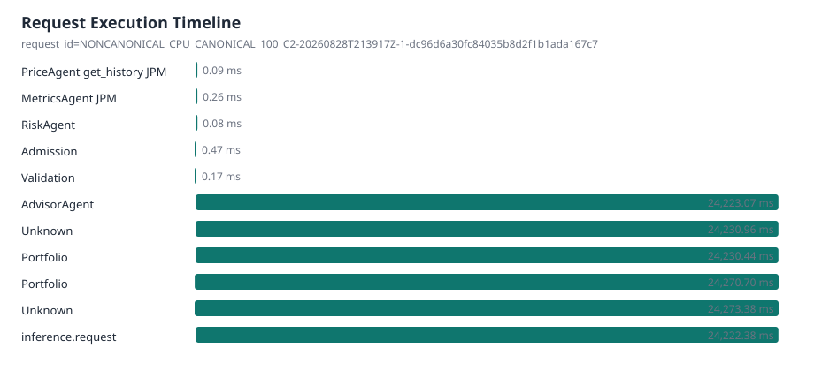
| Observation | Stage | Agent | Tool | Ticker | Wall time | Parent observation |
|---|---|---|---|---|---|---|
| otel:50620aa52f231f30996b2e929fb3fc56:9c525b79967a7147 | price | PriceAgent | get_history | JPM | 0.09 ms | otel:50620aa52f231f30996b2e929fb3fc56:e82f7984d5e62f5f |
| otel:50620aa52f231f30996b2e929fb3fc56:e82f7984d5e62f5f | metrics | MetricsAgent | JPM | 0.26 ms | otel:50620aa52f231f30996b2e929fb3fc56:683193de223f04e5 | |
| otel:50620aa52f231f30996b2e929fb3fc56:1c844c3a98fbfb8f | risk | RiskAgent | 0.08 ms | otel:50620aa52f231f30996b2e929fb3fc56:683193de223f04e5 | ||
| otel:50620aa52f231f30996b2e929fb3fc56:5523d2011fa3468f | admission | Admission | 0.47 ms | otel:50620aa52f231f30996b2e929fb3fc56:311b93003c5c574f | ||
| otel:50620aa52f231f30996b2e929fb3fc56:27862fc4d2aac5b2 | validation | Validation | 0.17 ms | otel:50620aa52f231f30996b2e929fb3fc56:311b93003c5c574f | ||
| otel:50620aa52f231f30996b2e929fb3fc56:a3a010267caa1eef | advisor | AdvisorAgent | 24,223.07 ms | otel:50620aa52f231f30996b2e929fb3fc56:683193de223f04e5 | ||
| otel:50620aa52f231f30996b2e929fb3fc56:3e7c7054ebc4cc6c | unknown | Unknown | 24,230.96 ms | otel:50620aa52f231f30996b2e929fb3fc56:311b93003c5c574f | ||
| otel:50620aa52f231f30996b2e929fb3fc56:683193de223f04e5 | portfolio | Portfolio | 24,230.44 ms | otel:50620aa52f231f30996b2e929fb3fc56:3e7c7054ebc4cc6c | ||
| otel:50620aa52f231f30996b2e929fb3fc56:5561f28d94a00a9e | portfolio | Portfolio | 24,270.70 ms | otel:50620aa52f231f30996b2e929fb3fc56:311b93003c5c574f | ||
| otel:50620aa52f231f30996b2e929fb3fc56:311b93003c5c574f | unknown | Unknown | 24,273.38 ms |
Provenance
- Git SHA
- N/A / telemetry unavailable for this run
- Model
- Qwen/Qwen3-0.6B
- Model revision
- N/A / telemetry unavailable for this run
- vLLM version
- 0.8.5
- dtype
- bfloat16
- max model length
- 4096
- max num seqs
- 32
- max batched tokens
- N/A / telemetry unavailable for this run
- Prefix caching
- disabled
- Benchmark concurrency
- 2
- Dataset mode
- canonical_100
- Selected query count
- 100
- Hardware
- {"cpu_count": 14, "gpu": {"driver_supported_cuda_version": null, "driver_version": null, "memory_total_mb": null, "name": null, "toolkit_cuda_version": null}, "hostname": "c927d186b01f", "machine": "x86_64", "platform": "Linux-5.15.153.1-mi
{kind=link}
{kind=link}
{kind=link}
{kind=link}
{kind=link}
{kind=link}
{kind=link}
{kind=link}
{kind=link}
{kind=link}
{kind=link}
{kind=link}